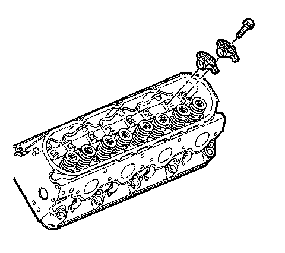
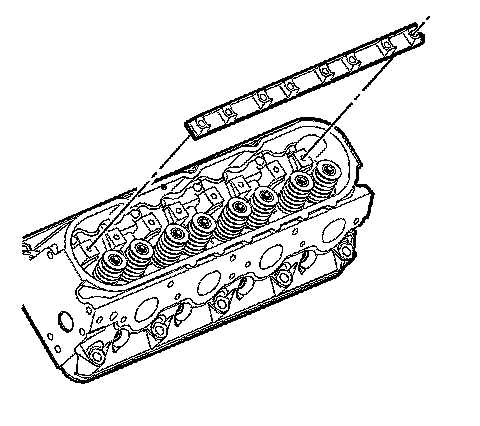

Rocker Arm Assembly: Service and Repair
Valve Rocker Arm and Push Rod Replacement
Removal Procedure

1. Remove the rocker arm cover.
Important: The engine firing order is 1, 8, 7, 2, 6, 5, 4, 3. Cylinders 1, 3, 5 and 7 are the left bank.
2. Remove the number one cylinder spark plug.
Important: Place the rocker arms, pushrods, and pivot support, in a rack so that they can be installed in the same location from which they were removed.
3. Remove the rocker arm bolts.
4. Remove the rocker arms.

5. Remove the rocker arm pivot support.

6. Remove the pushrods.
7. Clean and inspect the rocker arms and pushrods, if required.
Installation Procedure
Important: When reusing the valve train components, always install the components to the original location and position.
Valve lash is net build, no valve adjustment is required.
1. Lubricate the rocker arms and pushrods with clean engine oil.
2. Lubricate the flange of the rocker arm bolts with clean engine oil. Lubricate the flange or washer surface of the bolt that will contact the rocker arm.
3. Install the rocker arm pivot support.
Important: Make sure that the pushrods seat properly to the valve lifter sockets.
4. Install the pushrods.
Important: Make sure that the pushrods seat properly to the ends of the rocker arms. DO NOT tighten the rocker arm bolts at this time.
5. Install the rocker arms and bolts.
Important: The engine firing order is 1, 8, 7, 2, 6, 5, 4, 3. Cylinders 1, 3, 5 and 7 are the left bank. Cylinders 2, 4, 6 and 8 are the right bank.
6. Rotate the crankshaft until the number one piston is at top dead center (TDC) of the compression stroke. In this position, the number one cylinder rocker arms will be off lobe lift.
Notice: Refer to Fastener Notice.
7. With the engine in the number one firing position, tighten the following rocker arm bolts:
^ Tighten cylinders 1,2,7 and 8 exhaust valve rocker arm bolts to 30 N.m (22 lb ft).
^ Tighten cylinders 1,3,4 and 5 intake valve rocker arm bolts to 30 N.m (22 lb ft).
8. Rotate the crankshaft 360 degrees.
9. Tighten the following rocker arm bolts:
^ Tighten cylinders 3, 4, 5 and 6 exhaust valve rocker arm bolts to 30 N.m (22 lb ft).
^ Tighten cylinders 2, 6, 7 and 8 intake valve rocker arm bolts to 30 N.m (22 lb ft).
10. Install the number one cylinder spark plug. Refer to Spark Plug Replacement.
11. Install the rocker arm cover. Refer to Valve Rocker Arm Cover Replacement - Left Side or Valve Rocker Arm Cover Replacement - Right Side.